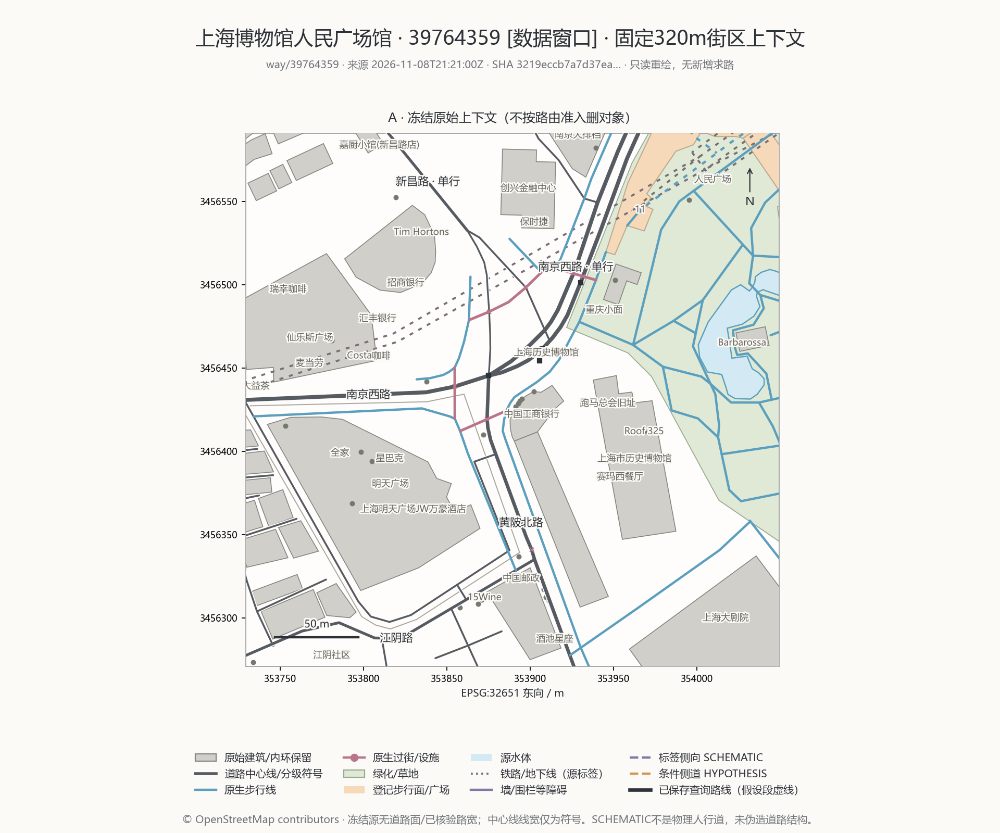
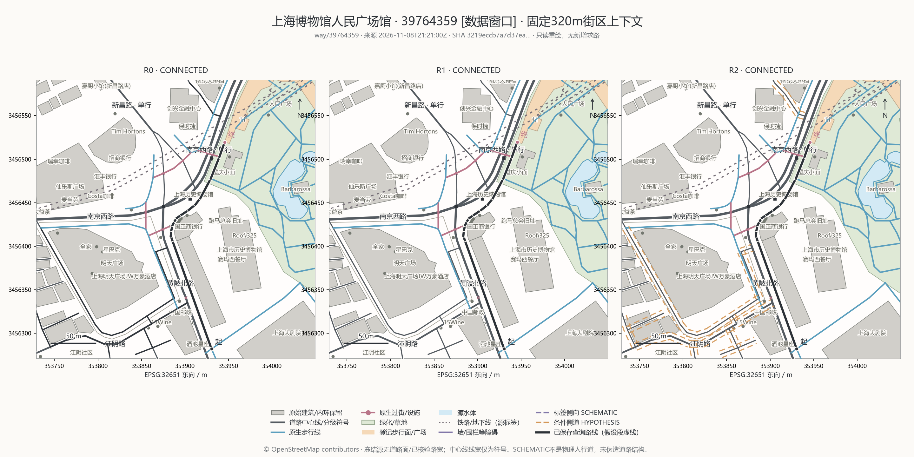
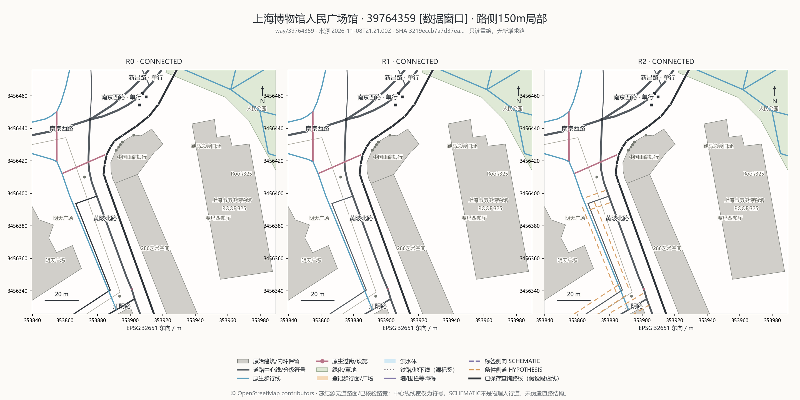
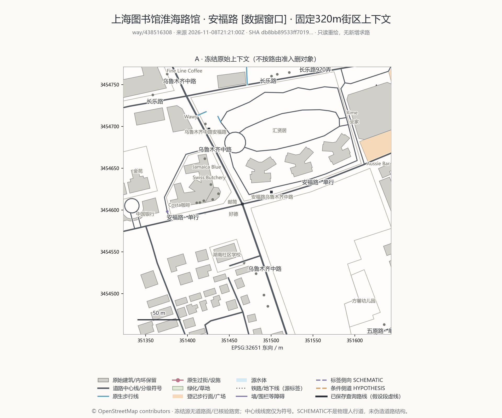
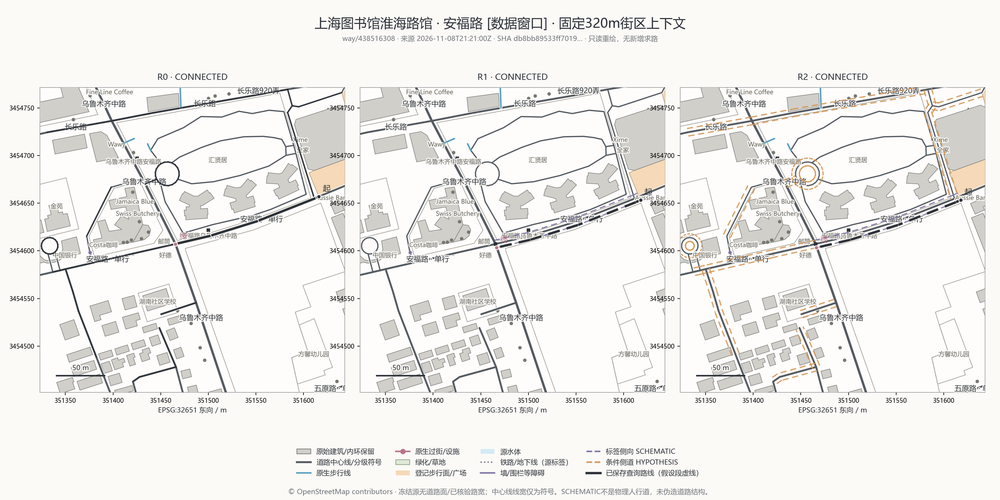
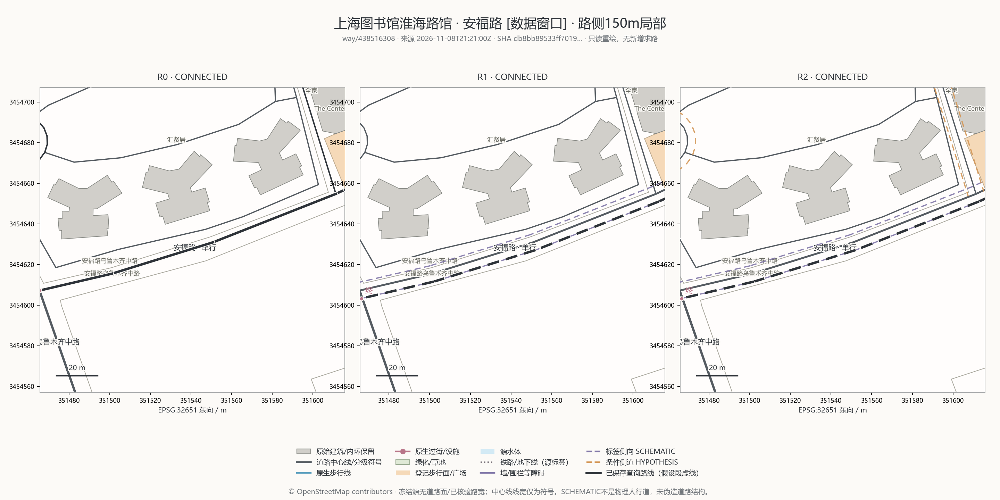
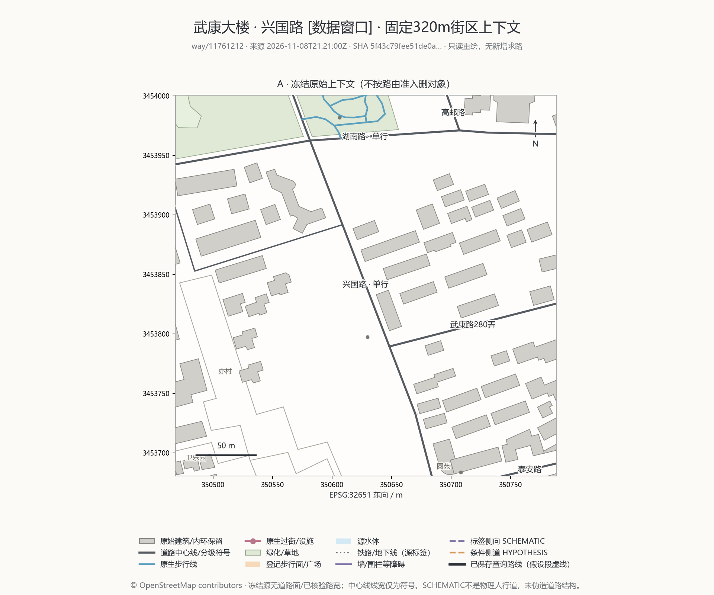
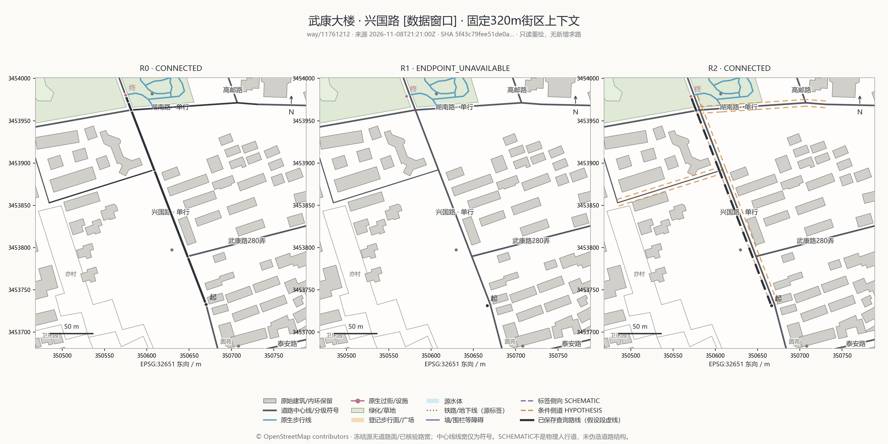
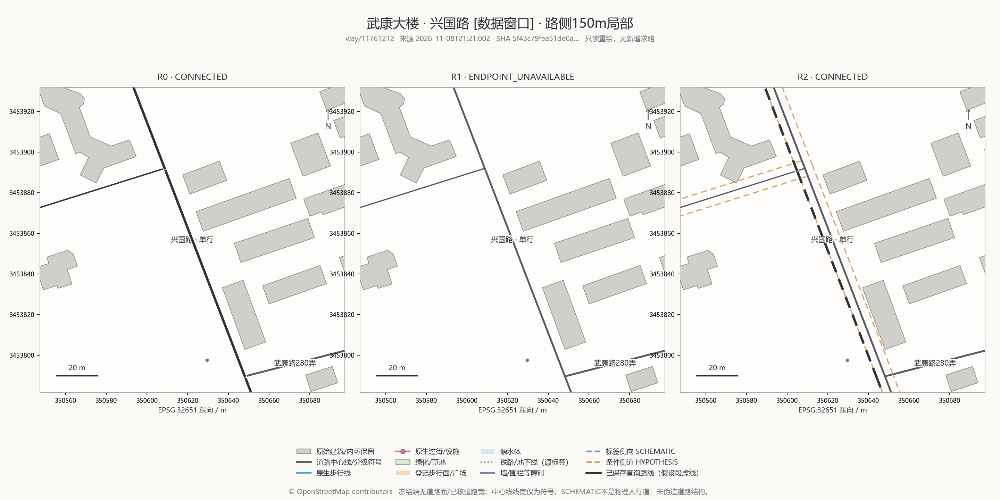

滚轮缩放、拖动平移，四个视图联动。原始对象是否可画与是否进入路由图是两件事；点选查看源ID、标签、来源及准入身份。未取得的数据明确标注，不补画道路面。
A · 完整街区上下文
优先阅读原始地图。此视图不叠加 R0/R1/R2；不以路由准入过滤源对象。
原始源几何；线宽只表达道路等级，非实测路面。
R0 · 冻结道路轴表示
相同底图和范围；显示修复后有效R0。共享轴不等于独立人行道。
R1 · 原生 / 侧别标签
明确标签支持的侧向逻辑表示仍以SCHEMATIC虚线显示。
R2 · 增加条件侧道
橙色虚线是CONDITIONAL假设；不将未知通行升级为地图事实。
源道路轴（等级分线宽）原生步行线源过街 / 信号标签派生 SCHEMATIC条件侧道 CONDITIONAL已保存计算路线（示意 / 假设段仍虚线）
图中原生圆形道路、围合建筑或面来自原数据，不代表算法强制街区闭环。地图比例是源几何比例；无可靠道路宽度时，不能从图上量出车道或人行道净宽。全景范围沿用原320米窗口，并非新扩大数据或评分范围。
最终有效矩阵 · 当前固定查询
| 方法 | 有效尝试 | 保存状态 | 路线段 | 假设段 | 示意段 | F1代理代价 |
|---|
代理代价不是精确步程；零长度侧别别名不算合法跨路。无路线时保留状态，不补画连接。
点选对象证据
当前查询身份与视野
只读显示最终有效冻结记录；显示切换、缩放与导出不会调用算法。
历史首跑与修复后身份分开
源对象保留清单 · 当前窗口全景口径
每个对象可以属于多个族，不能相加当唯一对象数。图计数仅表示源ID被原生边或派生边父对象引用，不代表原道路轴几何本身已准入，也不表示现实可通行真值。关图层或缩放局部不会删除源数据；下表是固定全景的导出/可渲染清单。
| 对象族 | 冻结源计数 | 本轮上下文导出 | 全景可渲染 | 冻结图源ID引用 R0/R1/R2 | 遗漏 / 不存在说明 |
|---|
完整街区与关键路侧静态图

























